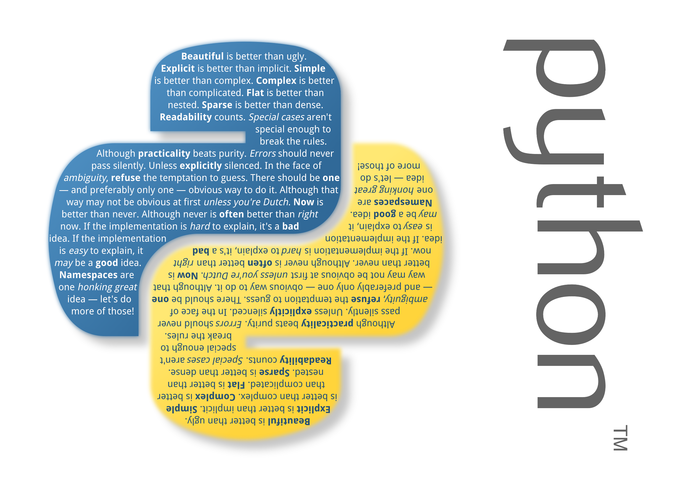
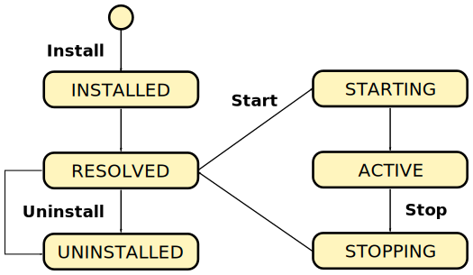
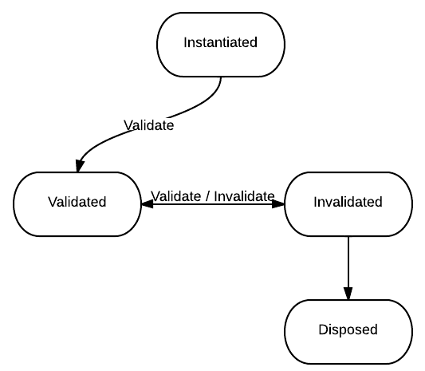

Pelix/iPOPO: OSGi in Python
Thomas Calmant,
thomas.calmant@isandlatech.com
Olivier Gattaz,
olivier.gattaz@isandlatech.com
Pelix & iPOPO: OSGi en Python

Pourquoi iPOPO ?
Python:
Accès aux méthodes POSIX
Portabilité (relative)
Faible empreinte mémoire
Simplicité de lecture / maintenance
iPOPO:
Intégration aux compositions OSGi/iPOJO
Conservation des approches et concepts utilisés en Java
Pelix: Mini OSGi
Gestion dynamique de bundles
Chargement, mise à jour, désinstallation
Registre de services
Notions équivalentes:
Bundle / BundleContext
ServiceReference / ServiceRegistration
Framework/Bundle/Service Listener
Pelix: Bundles
Bundle = Module Python (fichier.py)
Packages (dossiers) = ensemble de bundles
Python Eggs non gérés
Pas de Manifest
Pas de gestion des dépendances
BundleActivator
Objet ayant des méthodes start() et stop()
Pelix: Bundle Activator
Pelix: Bundle Life Cycle

Pelix: Services
BundleContext.register_service(...)
Instance, spécifications, propriétés (ID, Ranking, ...)
ServiceRegistration.unregister()
Nettoyage automatique à l'arrêt d'un bundle
BundleContext.get_all_service_references(...)
Recherche par spécifications ou par filtrage des propriétés
BundleContext.get_service(...)
Libération par BundleContext.unget_service()
Libération automatique à l'arrêt du bundle consommateur
Pelix: Bundle Activator
Pelix: Limitations
Pas d'auto-description des bundles (Manifest)
Pas de vérification des spécifications
Utilisation de chaînes de caractères
Pas de class/module loader
ModuleFinder/Loader définis dans Python 3.3
Pas de vérification des dépendances
Échec d'installation d'un module dépendant d'un bundle manquant
iPOPO: Mini iPOJO
Notions équivalentes:
Factory: classe manipulée
Component: instance de classe manipulée
InstanceManager: conteneur gérant un composant
Handler: gestionnaire associé à une décoration
iPOPO: Cycle de vie

iPOPO: Décorateurs
Décorateur Python
Méthode/Classe exécutée au chargement du module
Applicable sur classes et méthodes
Peut modifier l'objet et/ou retourner un objet différent
Application
Par décoration:
Par appel:
iPOPO: Décorateurs de classe
ComponentFactory
Finalisation de la manipulation
Requires
Définition d'une dépendance
Provides
Publication d'un service
Property
Définition d'une propriété de composant
Instantiate
Définition et configuration d'une instance
iPOPO: Décorateurs de callbacks
(In)Validate
Composant (in)validé
(Un)Bind
Dépendance injectée/retirée
Update
Dépendance mise à jour
(Un)BindField/UpdateField
Membre injecté/retiré/mis à jour
Cas particulier: destruction du composant
Méthode Python __del__()
Appelée par le
Garbage Collector
Inutile dans la plupart des cas
iPOPO: Décorateurs
Décoration de classe
Décoration en ligne
iPOPO: Manipulation de classe
Ajout de champs à la classe:
Membres contenant une propriété
Dépendances injectés
Descriptions de la factory
Injection de méthodes à l'instantiation:
Interception des accès aux propriétés
Interception des accès aux controlleurs de service
iPOPO: iPOPO service
Gestion des instances:
instantiate(factory, name, properties)
kill(name)
Événements de factories et composants:
add/remove_listener(listener)
handle_ipopo_event(event)
Événements de factories:
REGISTERED, UNREGISTERED
Événements d'instances:
INSTANTIATED, VALIDATED, INVALIDATED, BOUND, UNBOUND, KILLED
iPOPO: Limitations
Handlers
Définition encore instable
Injection directe des dépendances
Pas de proxy
Pas de gestion de concurrence pendant l'injection
Pelix Services: Shell
Service Shell
Commandes Pelix de base
Enregistrement des commandes
Exécution de ligne de commande
Shell Console
Console texte
Remote Shell
Console TCP brut (netcat)
Pelix services: HTTP Service
Implémentation basée sur le HTTP Server basique de Python
Principe des servlets
Associées à une ou plusieurs URI
Liaison à un service HTTP:
bound_to/unbound_from(path, params)
Gestion des requêtes:
do_
XXXX
(request, response)
Pelix Services: Remote Services
Registres d'exports et d'imports
Liaison entre les services d'import/export et ceux de découverte
Servlet d'accès au registre d'export
Accès aux détails sur chaque service
1 bundle par type d'import/export (JSON-RPC, XML-RPC)
Découverte des services à exporter
Enregistrement des services importés
1 bundle par type de découverte (multicast)
Propagation des évènements
Récupération des services à importer via la servlet du registre d'export
Pelix Services: EventAdmin
Similaire à l'EventAdmin OSGi
Émission d'événement synchone ou asynchrone
Événement: topic (URI) + propriétés
Récepteurs publiant un service EventHandler
API sans type Event
send/post(topic, properties)
handle_event(topic, properties)
Compatible avec Remote Services
Pelix/iPOPO on Android
Scripting Layer For Android (SL4A)
Modules sur la carte SD
Module
android
fourni
Kivy et Python-for-android (fork de SL4A)
Python et sources embarqués dans l'APK
Extraction au démarrage de l'application (lent)
Accès aux classes Java avec PyJNIus
Démonstration
Pelix/iPOJO: à venir...
Implémentation d'un ModuleFinder/Lodaer
Meilleure gestion des packages Python
Extensibilité des handlers
Nouveaux handlers
RequiresMap
Temporal
Nullable
Nouveaux services
ConfigurationAdmin
HTTPClient
iPOPO: Questions ?
ipopo.coderxpress.net
github.com/tcalmant/ipopo
Credits
Title image from github.com/davidfrasier
(Creative Commons BY-NC-SA 3.0)
Fingers crossed from flickr.com/daniel_gies
(Creative Commons BY-NC-ND 3.0)
Futurama Fry from Memegenerator